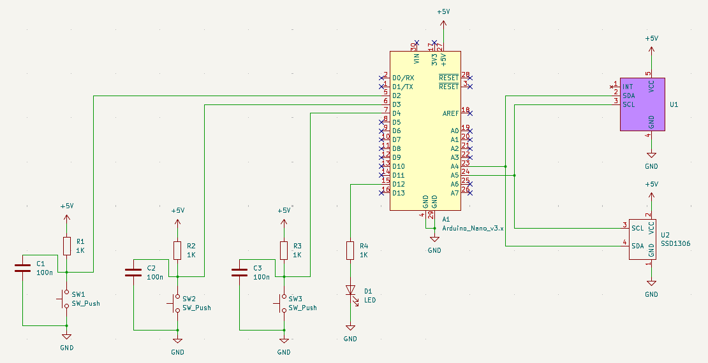
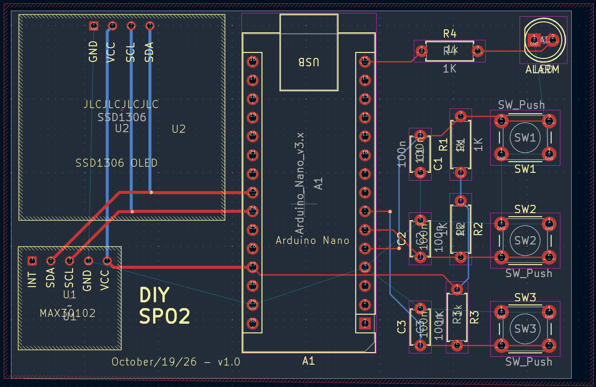
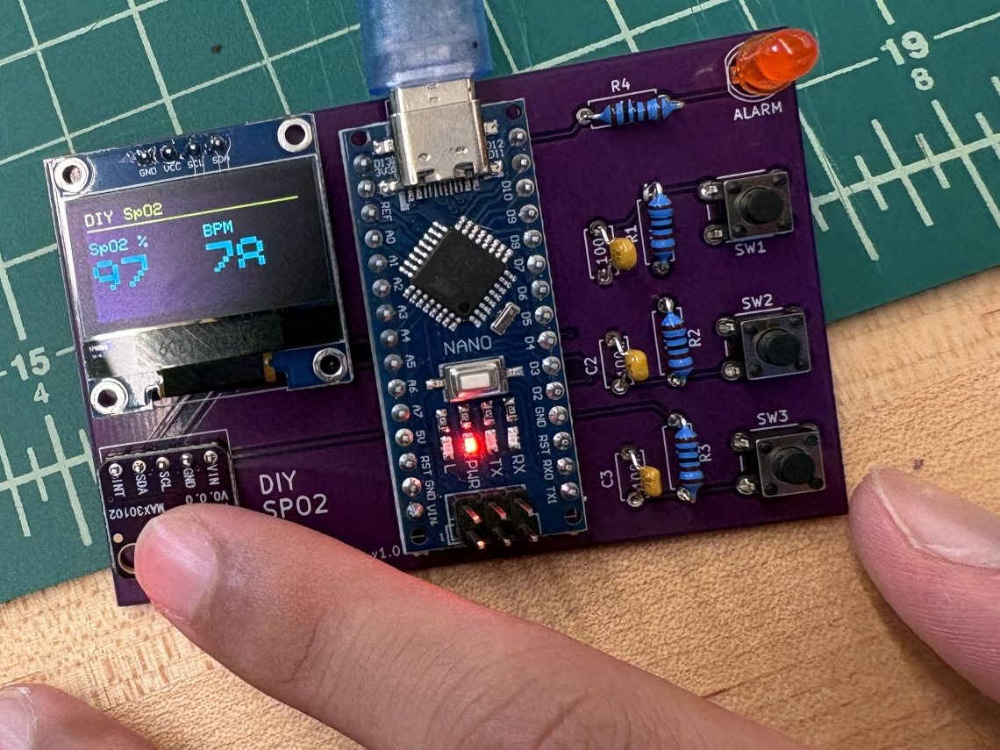

What I built
A handheld pulse oximeter on a custom PCB. An Arduino Nano reads red and infrared light measurements from a MAX30102 optical sensor over I2C, calculates blood-oxygen saturation and heart rate, and shows the results in real time on an OLED display.
How I designed it
I took the board from schematic capture through component placement and trace routing in KiCad. Some parts weren’t in the standard libraries, so I created custom footprints for them, then generated Gerber files to have the board fabricated.
Result
I hand-soldered every component, then tested and debugged the assembled board into a fully working device.